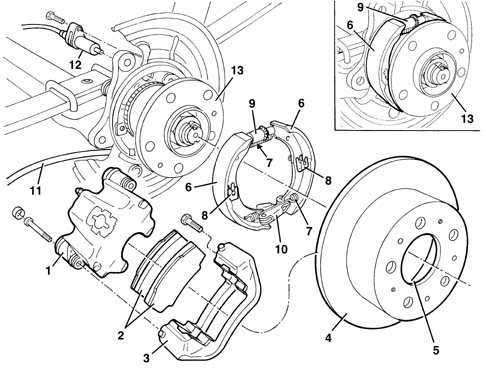

SPECIFICATIONS
- Path
- Descriptions > 33 BRAKING SYSTEM > SPECIFICATIONS
- Kind
- system description
- Applies to
- all engines; all production periods
- Interactive page
- https://sloeber94.github.io/elrnDB-fDct/en/#/244000426
Applies to: all engines; all production periods
In line with goals of excellence, the New Ducato is equipped with braking systems with:
- high efficiency;
- excellent modulation properties;
- safe in all conditions.
The vehicle is also fitted with the most sophisticated auxiliary electronic and mechanical systems:
- ABS: anti-lock brakes;
- EBD: electronic brakeforce distribution between the front and rear wheels;
- ASR: traction control with intervention on the brakes and the engine (where fitted).
The braking system is the power assisted hydraulic type, comprising two crossover, independent ciruits (each circuit acting on one front wheel and the diagonally opposite rear wheel) to ensure braking and stability even if one of the circuits fails.
The entire range is equipped with:
- ventilated brake discs on the front wheels (on all versions);
- solid brake discs/drums on the rear wheels;
- ABS with EBD and ASR (where fitted).
When the braking system is fitted with rear disc brakes, the parking brake is located inside the actual brake discs; this system is known as "drum in hat" and consists of a drum located inside the brake disc. Obviously braking distances have been reduced still further, braking is even more responsive and safe, fatigue resistance has been improved and likewise the effort required on the pedal.
Braking system specifications for the different trim levels
10-14q.li 2.0JTD, 2.3JTD | 10-14q.li 2.0 petrol,2.8JTD | 18q.li | ||
|---|---|---|---|---|
Brake servo | [inches] | 11 | 11 | 11 |
Front caliper | [mm] | 44÷48 | 44÷48 | 46÷52 |
Front disc | [mm] | 280x24 | 280x24 | 300x24 |
Rear caliper | [mm] | / | 1x46 | 1x46 |
Rear disc | [mm] | / | 280x16 | 280x16 |
Rear drum | [mm] | 254x57 | / | / |
Rear cylinder | [mm] | 28,6 | / | / |
Load proportioning valve | [mm] | pre-loading | pre-loading | pre-loading |
Pedal ratio | [mm] | 3,78 | 3,78 | 3,78 |
Parking | [mm] | drum | DIH 172x42 | DIH 172x42 |

- 1 - Caliper;
- 2 - pads;
- 3 - caliper holder;
- 4 - service brake disc;
- 5 - parking brake drum;
- 6 - shoes;
- 7 - shoe return springs;
- 8 - shoe retaining springs;
- 9 - shoe clearance recovery;
- 10 - parking brake cord attachment linkage;
- 11 - parking brake cable;
- 12 - ABS sensor;
- 13 - hub.